1과목: 응용역학
1. 그림과 같이 이축응력을 받고 있는 요소의 체적변형률은? (단, 탄성계수(E)는 2×105 MPa, 푸아송 비(ν)는 0.3이다.)
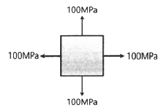
2. 그림과 같은 단면의 상승모멘트(Ixy)는?
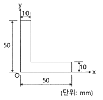
3. 그림과 같이 봉에 작용하는 힘들에 의한 봉 전체의 수직 처짐의 크기는?
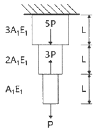
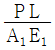
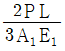
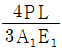
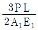
4. 그림과 같은 구조물의 BD 부재에 작용하는 힘의 크기는?
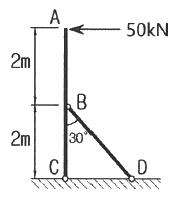
5. 그림과 같은 와렌(warren) 트러스에서 부재력이 '0(영)'인 부재는 몇 개인가?
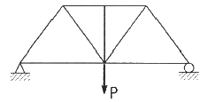
6. 전단응력도에 대한 설명으로 틀린 것은?
7. 그림과 같은 2경간 연속보에 등분포 하중 w = 4kN/m가 작용할 때 전단력이 “0”이 되는 위치는 지점 A로부터 얼마의 거리(x)에 있는가?
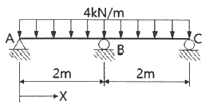
8. 그림과 같은 3힌지 아치의 중간 힌지에 수평하중 P가 작용할 때 A지점의 수직반력(VA)과 수평 반력(HA)은?
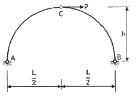
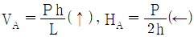
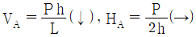
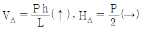
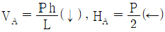
9. 그림과 같이 단순지지된 보에 등분포하중 q가 작용하고 있다. 지점 C의 부모멘트와 보의 중앙에 발생하는 정모멘트의 크기를 같게하여 등분포하중 q의 크기를 제한하려고 한다. 지점 C와 D는 보의 대칭거동을 유지하기 위하여 각각 A와 B로부터 같은 거리에 배치하고자 한다. 이때 보의 A점으로부터 지점 C까지의 거리(X)는?
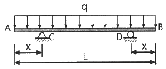
10. 탄성 변형에너지(Elastic Strain Energy)에 대한 설명으로 틀린 것은?
11. 그림에서 중앙점(C점)의 휨모멘트(Mc)는?
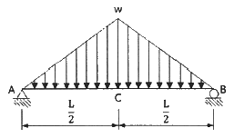
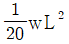
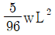
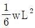
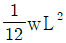
12. 단면이 200mm × 300mm인 압축부재가 있다. 부재의 길이가 2.9m일 때 이 압축부재의 세장비는 약 얼마인가? (단, 지지상태는 양단 힌지이다.)
13. 그림과 같이 한 변이 a인 정사각형 단면의 1/4 을 절취한 나머지 부분의 도심(C)의 위치(yo)는?
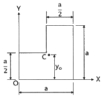
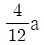
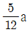
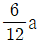
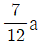
14. 그림과 같은 구조물에서 하중이 작용하는 위치에서 일어나는 처짐의 크기는?
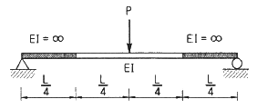
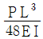
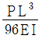
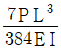
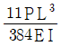
15. 그림과 같은 게르버 보에서 A점의 반력은?
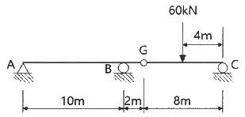
16. 그림과 같은 부정정보의 A단에 작용하는 휨모멘트는?
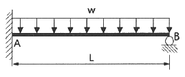
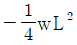
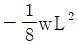
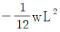
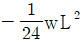
17. 그림과 같이 단순보에 이동하중이 작용할 때 절대최대휨모멘트는?
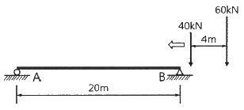
18. 그림과 같은 내민보에서 A점의 처짐은? (단, I = 1.6×108 mm4, E = 2.0×105 MPa 이다.)
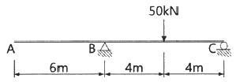
19. 그림과 같이 연결부에 두 힘 50kN과 20kN이 작용한다. 평형을 이루기 위한 두 힘 A와 B의 크기는?
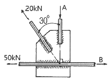
20. 바닥은 고정, 상단은 자유로운 기둥의 좌굴 형상이 그림과 같을 때 임계하중은?
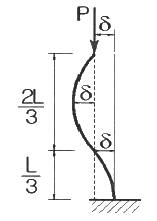
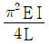
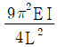
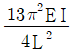
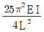
2과목: 측량학
21. 다음 중 완화곡선의 종류가 아닌 것은?
22. 그림과 같이 교호수준측량을 실시한 결과가 a1 = 0.63m, a2 = 1.25m, b1 = 1.15m, b2 = 1.73m 이었다면, B점의 표고는? (단, A의 표고 = 50.00m)
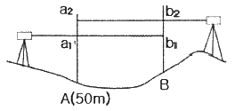
23. 수심 h인 하천의 수면으로부터 0.2h, 0.4h, 0.6h, 0.8h 인 곳에서 각각의 유속을 측정하여 0.562m/s, 0.521m/s, 0.497m/s, 0.364m/s의 결과를 얻었다면 3점법을 이용한 평균유속은?
24. GNSS 다중주파수(multi-frequency)를 채택하고 있는 가장 큰 이유는?
25. 측점간의 시통이 불필요하고 24시간 상시 높은 정밀도로 3차원 위치측정이 가능하며, 실시간 측정이 가능하여 항법용으로도 활영되는 측량방법은?
26. 어떤 측선의 길이를 관측하여 다음 표와 같은 결과를 얻었다면 최학값은?
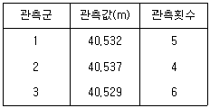
27. 그림과 같은 구역을 심프슨 제1법칙으로 구한 면적은? (단, 각 구간의 지거는 1m로 동일하다.)
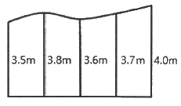
28. 단곡선을 설치할 때 곡선반지름이 250m, 교각이 116°23′, 곡선시점까지의 추가거리가 1146m 일 때 시단현의 편각은? (단, 중심말뚝 간격=20m)
29. 그림과 같은 트레버스에서 AL의 방위각이 29° 40′ 15″, BM의 방위각이 320° 27′ 12″, 교각의 총합이 1190° 47′ 32″ 일 때 각관측 오차는?
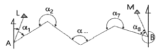
30. 지형측량을 할 때 기본 삼각점만으로는 기준점이 부족하여 추가로 설치하는 기준점은?
31. 지구반지름이 6370km 이고 거리의 허용오차가 1/105 이면 평면측량으로 볼 수 있는 범위의 지름은?
32. 그림과 같은 수준망을 각각의 환에 따라 폐합오차를 구한 결과가 표와 같고 폐합오차의 한계가 ±1.0√S cm 일 때 우선적으로 제 관측할 필요가 있는 노선은? (단, S : 거리[km])
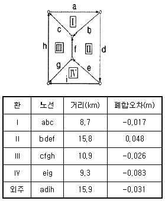
33. 수준측량에서 발생하는 오차에 대한 설명으로 틀린 것은?
34. 그림과 같은 관측결과 θ = 30° 11′ 00″, S = 1000m 일 때 C점의 X좌표는? (단, AB의 방위각 = 89° 49′ 00″, A점의 X좌표 = 1200m)
35. 그림과 같은 복곡선에서 t1 + t2 의 값은?
36. 노선 설치 방법 중 좌표법에 의한 설치방법에 대한 설명으로 틀린 것은?
37. 다각측량에서 각 측량의 기계적 오차 중 시준축과 수평축이 직교하지 않아 발생하는 오차를 처리하는 방법으로 옳은 것은?
38. 30m당 0.03m가 짧은 줄자를 사용하여 정사각형 토지와 한 변을 측정한 결과 150m이었다면 면적에 대한 오차는?
39. 지성선에 관한 설명으로 옳지 않은 것은?
40. 그림과 같은 지형에서 각 등고선에 쌓인 부분의 면적이 표와 같을 때 각주공식에 의한 토량은? (단, 윗면은 평평한 것으로 가정한다.)
3과목: 수리학 및 수문학
41. 2개의 불투수층 사이에 있는 대수층 두께 a, 투수계수 k 인 곳에 반지름 r0 인 굴착정(artesian well)을 설치하고 일정 양수량 Q를 양수하였더니, 양수 전 굴착정 내의 수위 H가 h0 로 강하하여 정상흐름이 되었다. 굴착정의 영향원 반지름을 R이라 할 때 (H-h0)의 값은?
42. 침투능(infilration capacity)에 관한 설명으로 틀린 것은?
43. 3차원 흐름의 연속방정식을 아래와 같은 형태로 나타낼 때 이에 알맞은 흐름의 상태는?
44. 지름 20cm의 원형단면 관수로에 물이 가득차서 흐를 때의 동수반경은?
45. 대수층의 두께 2.3m, 폭 1.0m일 때 지하수 유량은? (단, 지하수류의 상·하류 두 지점 사이의 수두차 1.6m, 두 지점 사이의 평균거리 360m, 투수계수 k=192m/day)
46. 그림과 같은 수조 벽면에 작은 구멍을 뚫고 구멍의 중심에서 수면까지 높이가 h일 때, 유출속도 V는? (단, 에너지 손실은 무시한다.)
47. 그림과 같이 원형관 중심에서 V의 유속으로 물이 흐르는 경우에 대한 설명으로 틀린 것은? (단, 흐름은 층류로 가정한다.)
48. 어떤 유역에 다음 표와 같이 30분간 집중호우가 계속 되었을 때, 지속기간 15분인 최대강우강도는?
49. 정지하고 있는 수중에 작용하는 정수압의 성질로 옳지 않은 것은?
50. 단위유량도에 대한 설명으로 틀린 것은?
51. 한계수심에 대한 설명으로 옳지 않은 것은?
52. 개수로 흐름의 도수현상에 대한 설명으로 틀린 것은?
53. 단면 2m×2m, 높이 6m인 수조에 물이 가득 차 있을 때 이 수조의 바닥에 설치한 지름이 20cm인 오리피스로 배수시키고자 한다. 수심이 2m가 될 때까지 배수하는데 필요한 시간은? (단, 오리피스 유량계수 C=0.6, 중력가속도 g=9.8m/s2)
54. 정상류에 관한 설명으로 옳지 않은 것은?
55. 수로의 단위폭에 대한 운동량 방정식은? (단, 수로의 경사는 완만하며, 바닥 마찰저항은 무시한다.)
56. 완경사 수로에서 배수곡선(backwater curve)에 해당하는 수면곡선은?
57. 지하수의 연직분포를 크게 통기대와 포화대로 나눌 때, 통기대에 속하지 않는 것은?
58. 하천의 수리모형실험에 주로 사용되는 상사법칙은?
59. 속도분포를 으로 나타낼 수 있을 때 바닥면에서 0.5m 떨어진 높이에서의 속도경사(Velocity gradient)는? (단, v : m/sec, y : m)
60. 수중에 잠겨 있는 곡면에 작용하는 연직분력은?
4과목: 철근콘크리트 및 강구조
61. 프리텐션 PSC부재의 단면적이 200000 mm2 인 콘크리트 도심에 PS강선을 배치하여 초기의 긴장력(Pi)을 800kN 가하였다. 콘크리트의 탄성변형에 의한 프리스트레스의 감소량은? (단, 탄성계수비(n)은 6이다.)
62. 경간이 8m인 단순 지지된 프리스트레스트 콘크리트 보에서 등분포하중(고정하중과 활하중의 합)이 w=40kN/m 작용할 때 중앙 단면 콘크리트 하연에서의 응력이 0이 되려면 PS강재에 작용되어야 할 프리스트레스 힘(P)은? (단, PS강재는 단면 중심에 배치되어 있다.)
63. 아래 그림과 같은 직사각형 단면의 단순보에 PS강재가 포물선으로 배치되어 있다. 보의 중앙단면에서 일어나는 상연응력(㉠) 및 하연응력(㉡)은? (단, PS강재의 긴장력은 3300kN 이고, 자중을 포함한 작용하중은 27kN/m 이다.)
64. 2방향 슬래브 설계 시 직접설계법을 적용하기 위해 만족하여야 하는 사항으로 틀린 것은?
65. 옹벽의 설계 및 구조해석에 대한 설명으로 틀린 것은?
66. 그림과 같은 띠철근 기둥에서 띠철근의 최대 수직간격은? (단, D10의 공칭직경은 9.5mm, D32의 공칭직경은 31.8mm이다.)
67. 강구조의 특징에 대한 설명으로 틀린 것은?
68. 콘크리트와 철근이 일체가 되어 외력에 저항하는 철근콘크리트 구조에 대한 설명으로 틀린 것은?
69. 폭이 300mm, 유효깊이가 500mm인 단철근 직사각형 보에서 인장철근 단면적이 1700mm2 일 때 강도설계법에 의한 등가직사각형 압축응력블록의 깊이(a)는? (단, fck = 20MPa, fy = 300MPa 이다.)
70. 아래에서 설명하는 용어는?
71. 그림과 같은 L형강에서 인장응력 검토를 위한 순폭계산에 대한 설명으로 틀린 것은?
72. 단변 : 장변 경간의 비가 1 : 2인 단순 지지된 2방향 슬래브의 중앙점에 집중하중 P가 작용할 때 단변과 장변이 부담하는 하중비(PS : PL)는? (단, PS : 단변이 부담하는 하중, PL : 장변이 부담하는 하중)
73. 보통중량콘크리트에서 압축을 받는 이형철근 D29(공칭지름 28.6mm)를 정착시키기 위해 소요되는 기본정착길이(lab)는? (단, fck = 35MPa, fy = 400MPa 이다.)
74. 철근콘크리트 부재의 전단철근에 대한 설명으로 틀린 것은?
75. 폭 350mm, 유효깊이 500mm인 보에 설계기준항복강도 가 400MPa인 D13 철근을 인장 주철근에 대한 경사각(α)이 60° 인 U형 경사 스터럽으로 설치했을 때 전단보강철근의 공칭강도(Vs)는? (단, 스터럽 간격 s=250mm, D13 철근 1본의 단면적은 127mm2 이다.)
76. 철근콘크리트 보를 설계할 때 변화구간 단면에서 강도감소계수(ø)를 구하는 식은? (단, fck = 40MPa, fy = 400MPa, 띠철근으로 보강된 부재이며, εt는 최외단 인장철근의 순인장변형률이다.)
77. 그림과 같이 지름 25mm의 구멍이 있는 판(plate)에서 인장응력 검토를 위한 순폭은?
78. 폭이 350mm, 유효깊이가 550mm인 직사각형 단면의 보에서 지속하중에 의한 순간 처짐이 16mm일 때 1년 후 총 처짐량은? (단, 배근된 인장철근량(As)은 2246mm2, 압축철근량(As′)은 1284mm2 이다.)
79. 단철근 직사각형 보에서 fck = 32MPa인 경우, 콘크리트 등가 직사각형 압축응력블록의 깊이를 나타내는 계수 β1은?
80. 폭이 300mm, 유효깊이가 500mm인 단철근직사각형 보에서 강도설계법으로 구한 균형 철근량은? (단, 등가 직사각형 압축응력블록을 사용하며, fck = 35MPa, fy = 350MPa 이다.)
5과목: 토질 및 기초
81. 4.75mm체(4번 체) 통과율이 90% 0.075mm체(200번 체) 통과율이 4%이고, D10 = 0.25mm, D30 = 0.6mm, D60 = 2mm 인 흙을 통일분류법으로 분류하면?
82. 그림과 같은 정사각형 기초에서 안전율을 3으로 할 때 Tezanghi의 공식을 사용하여 지지력을 구하고자 한다. 이때 한 변의 최소길이(B)는? (단, 물의 단위중량은 9.81 kN/m3, 점착력(c)은 60 kN/m2, 내부 마찰각(ø)은 0° 이고, 지지력계수 Nc = 5.7, Nq = 1.0, Nγ = 0 이다.)
83. 접지압(또는 지반반력)이 그림과 같이 되는 경우는?
84. 지표면이 수평이고 옹벽의 뒷면과 흙과의 마찰각이 0° 인 연직옹벽에서 Coulomb 토압과 Rankine 토압은 어떤 관계가 있는가? (단, 점착력은 무시한다.)
85. 도로의 평판 재하 시험에서 1.25mm 침하량에 해당하는 하중 강도가 250kN/m2 일 때 지반반력 계수는?
86. 다음 지반 개량공법 중 연약한 점토지반에 적합하지 않은 것은?
87. 표준관입시험(S.P.T) 결과 N값이 25이었고, 이때 채취한 교란시료로 입도시험을 한 결과 입자가 둥글고, 입도분포가 불량할 때 Dunham의 공식으로 구한 내부 마찰각(ø)은?
88. 현장에서 완전히 포화되었던 시료라 할지라도 시료 채취 시 기포가 형성되어 포화도가 저하될 수 있다. 이 경우 생성된 기포를 원상태로 용해시키기 위해 작용시키는 압력을 무엇이라고 하는가?
89. 그림과 같은 지반에서 하중으로 인하여 수직응력(△σ1)이 100kN/m2 증가되고 수평응력(△σ3)이 50kN/m2 증가되었다면 간극수압은 얼마나 증가되었는가? (단, 간극수압계수 A=0.5이고, B=1 이다.)
90. 어떤 점토지반에서 베인 시험을 실시하였다. 베인의 지름이 50mm, 높이가 100mm, 파괴 시 토크가 59 N·m 일 때 이 점토의 점착력은?
91. 그림과 같이 동일한 두께의 3층으로 된 수평모래층이 있을 때 토층에 수직한 방향의 평균투수계수(kv)는?
92. Terzangi의 1차 압밀에 대한 설명으로 틀린 것은?
93. 흙의 다짐에 대한 설명으로 틀린 것은?
94. 3층 구조로 구조결합 사이에 치환성 양이온이 있어서 활성이 크고, 시트(sheet) 사이에 물이 들어가 팽창·수축이 크고, 공학적 안정성이 약한 점토 광물은?
95. 간극비 e1 = 0.80 인 어떤 모래의 투수계수가 k1 = 8.5×10-2 cm/s 일 때, 이 모래를 다져서 간극비를 e2 = 0.57 로 하면 투수계수 k2는?
96. 사면안정 해석방법에 대한 설명으로 틀린 것은?
97. 그림과 같이 지표면에 집중하중이 작용할 때 A점에서 발생하는 연직응력의 증가량은?
98. 지표에 설치된 3m×3m의 정사각형 기초에 80kN/m2 의 등분포하중이 작용할 때, 지표면 아래 5m 깊이에서의 연직응력의 증가량은? (단, 2:1 분포법을 사용한다.)
99. 다음 연약지반 개량공법 중 일시적인 개량공법은?
100. 연약지반에 구조물을 축조할 때 피에조미터를 설치하여 과잉간극수압의 변화를 측정한 결과 어떤 점에서 구조물 축조 직후 과잉간극수압이 100 kN/m2 이었고, 4년 후에 20 kN/m2 이었다. 이때의 압밀도는?
6과목: 상하수도공학
101. 1인1평균급수량에 대한 일반적인 특징으로 옳지 않은 것은?
102. 침전지의 수심이 4m이고 체류시간이 1시간일 때 이 침전지의 표면부하율(Surface loading rate)은?
103. 인구가 10000명인 A시에 폐수 배출시설 1개소가 설치될 계획이다. 이 폐수 배출시설의 유량은 200m3/d 이고 평균 BOD 배출농도는 500 gBOD/m3 이다. 이를 고려하여 A시에 하수종말처리장을 신설할 때 적합한 최소 계획인구수는? (단, 하수종말처리장 건설 시 1인 1일 BOD 부하량은 50 gBOD/인∙d 로 한다.)
104. 우수관로 및 합류식관로 내에서의 부유물 침전을 막기 위하여 계획우수량에 대하여 요구되는 최소 유속은?
1⑤. 어느 A시에 장래 2030년의 인구추정 결과 85000명으로 추산되었다. 계획년도의 1인 1일당 평균급수량을 380L, 급수보급률을 95%로 가정할 때 계획년도의 계획 1일 평균급수량은?
106. 정수처리 시 트리할로메탄 및 곰팡이 냄새의 생성을 최소화하기 위해 침전지가 여과지 사이에 염소제를 주입하는 방법은?
107. 하수도의 관로계획에 대한 설명으로 옳은 것은?
108. 지름 400mm, 길이 1000m인 원형 철근 콘크리트 관에 물이 가득 차 흐르고 있다. 이 관로 시점의 수두가 50m 라면 관로 종점의 수압(kgf/cm2)은? (단, 손실수두는 마찰손실 수두만을 고려하며 마찰계수(f) = 0.⑤, 유속은 Manning 공식을 이용하여 구하고 조도계수(n) = 0.013, 동수경사(I) = 0.001 이다.)
109. 교차연결(cross connection)에 대한 설명으로 옳은 것은?
110. 슬러지 농축과 탈수에 대한 설명으로 틀린 것은?
111. 송수시설에 대한 설명으로 옳은 것은?
112. 압력식 하수도 수집 시스템에 대한 특징 틀린 것은?
113. pH가 5.6에서 4.3으로 변화할 때 수소이온 농도는 약 몇 배가 되는가?
114. 하수처리계획 및 재이용계획을 위한 계획오수량에 대한 설명으로 옳은 것은?
115. 배수관망의 구성방식 중 격자식과 비교한 수지상식의 설명으로 틀린 것은?
116. 슬러지 처리의 목표로 옳지 않은 것은?
117. 합류식과 분류식에 대한 설명으로 옳지 않은 것은?
118. 하수의 고도처리에 있어서 질소와 인을 동시에 제거하기 어려운 공법은?
119. 저수지에서 식물성 플랑크톤의 과도성장에 따라 부영양화가 발생될 수 있는데, 이에 대한 가장 일반적인 지표기준은?
120. 정수장의 소독 시 처리수량이 10000m3/d 인 정수장에서 염소를 5mg/L의 농도로 주입할 경우 잔류염소농도가 0.2mg/L이었다, 염소요구량은? (단, 염소의 순도는 80% 이다.)